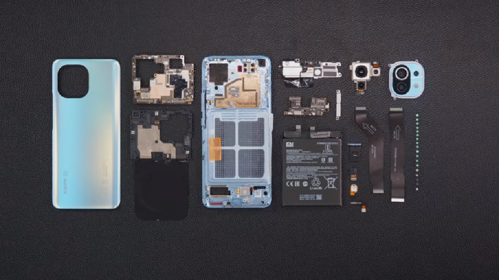

Noticias de tecnologia
Llegó el nuevo Samsung S23 FE
Se trata del mas reciente equipo, basado en la linea S23 en su versión FE (Fun Edition). Anteriormente
hemos visto otros equipos de la serie S, que no se alejan mucho de las prestaciones premium de sus
compañeros de gama.
Tuvimos anteriormente, desde el Samsung Galaxy S20FE, con caracteristicas de un premium como sus
hermanos.
El nuevo Samsung S23 FE viene con las siguientes caracteristicas:
- Pantalla de 6,4 pulgadas Amoled Dynamic 2x , con resolución 1080p y tasa de refrezco de 120hz, con Gorila Glass 5.
- Procesador Exynos 2200 (mismo que en el Samsung Galaxy S22) para el mundo. Para la version USA, tiene el Snapdragon 8 gen 1.
- Memoria ROM de 128gb y Memoria RAM de 8gb.
- Sistema operativo Android 13, One UI 5.1.
- Camaras traseras se componen de 3: Gran angular de 50mp, Ultra gran angular de 12mp, teleobjetivo de 8mp.
- Camara Frontal: 10mp gran angular.
- Bateria no removible de 4500 mah, con una carga por cable a 25w. también cuenta con la carga inalambrica.
- Viene en variedad de colores: Menta, Crema, Grafito, Púrpura, Índigo, Mandarina.
Te invitamos a que veas las espicificaciones completas aquí.

Anatomia de un Celular
Estamos seguros de que no conoces la cantidad de componentes que puede tener tu equipo.
Seguro vez que se cayo y por alguna razón, alguna de las partes de tu equipo no esta funcionando. Hoy te
mostramos que es lo que compone a un celular.
Pregunta: Cual es el arreglo mas recurrente en smartphones actualmente?
Chan chaaan...
Por lo general, cualquier técnico al recibir puede diagnosticarte rapido que reparacion necesitas al ver el estado de la pantalla de tu equipo.Sin embargo, hay mas cosas que pueden pasar con una caída. Te invito que las veamos en el siguiente video aquí... 